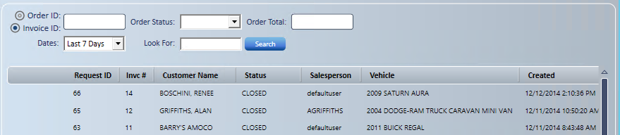
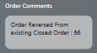
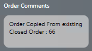

Invoice Reversal and Copy
Use Invoice Reversal and Copy to quickly reverse an invoice that's already processed, or to copy an existing invoice to a new order.
Before you start: Reverse (Create a Return Order) shows only for closed (invoiced) orders, and needs the Service Request - Reversal access right. Copy (Copy to New Order) shows for orders in any status, and needs the Service Request - Copy Order access right.
- Open the Service Request search.

- Enter the search criteria you know.
Reverse an invoice
- Highlight the invoice.
- Hover to the left of Request Id and select the reverse function.
- Confirm that the order should be reversed.
- Select the reversal date from the calendar, if your access rights allow.
- Choosing the date needs the Service Request - Change Date on Reversal access right. Without it, the reversal uses today's date.
- The calendar starts on the original invoice date.
- Select Done to use the date, or Cancel to stop the reversal.
- A date whose cash drawer is already reconciled isn't allowed unless you have the Service Request - Set InvoiceDate as CD Reconciled access right. Pick another date.
- An order can be reversed only once. A reversal (Return Order) can't be reversed or copied.
- If the order has a card payment, your store may ask whether to refund the card. See Voids, Refunds, and Reversals under Electronic Payments.
- Review the reversed invoice. It shows as the reverse of the original document.
- Its status is closed, and it CAN'T be edited.
- Invoice comments fill in automatically, as shown below.

-
- Cost reverses at the cost at the time of the original sale.
- Order validation still needs to be met before you can save.
- Print the invoice if needed.
- Select Save.
- Select Back to return to the Home screen.
Copy an invoice
- Highlight the invoice.
- Hover to the left of Request Id and select the copy function.
- Confirm that the order should be copied.
- The service request shows an exact copy of the selected invoice, with these differences:
- The copy uses the current tax percentage for the order's tax schedule, not the rate on the original invoice.
- A reversal (Return Order) can't be copied.
- The copy is a new, editable service request. Its status is set by its packages like any new order, not Work Complete.
- The public comment notes the Request ID it was copied from ("Order copied from existing Order").
- The service request shows an exact copy of the selected invoice, with these differences:

- Add items or make any changes needed.
- A new Request ID is assigned when the copy is saved. Revise Order isn't needed.
- Continue with the service request as you would any other.